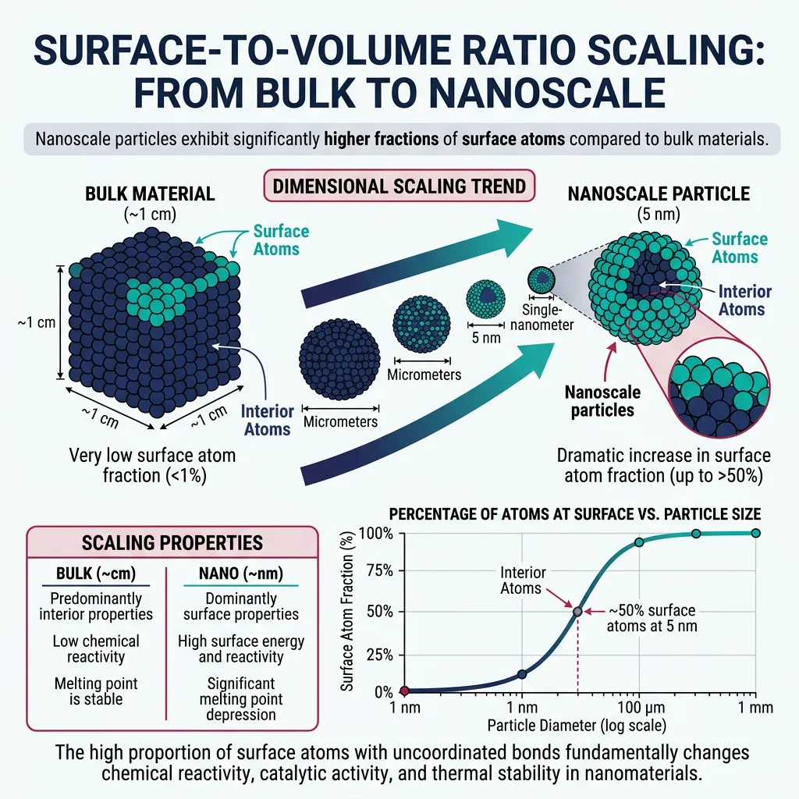
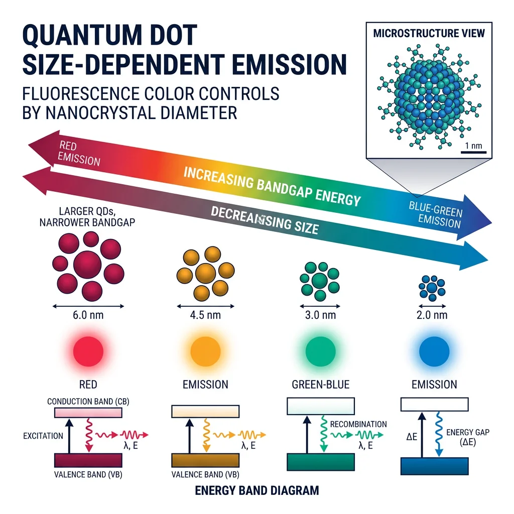
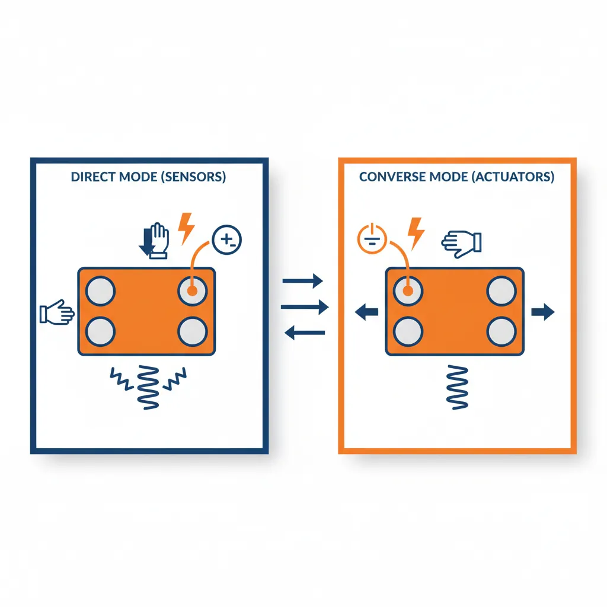
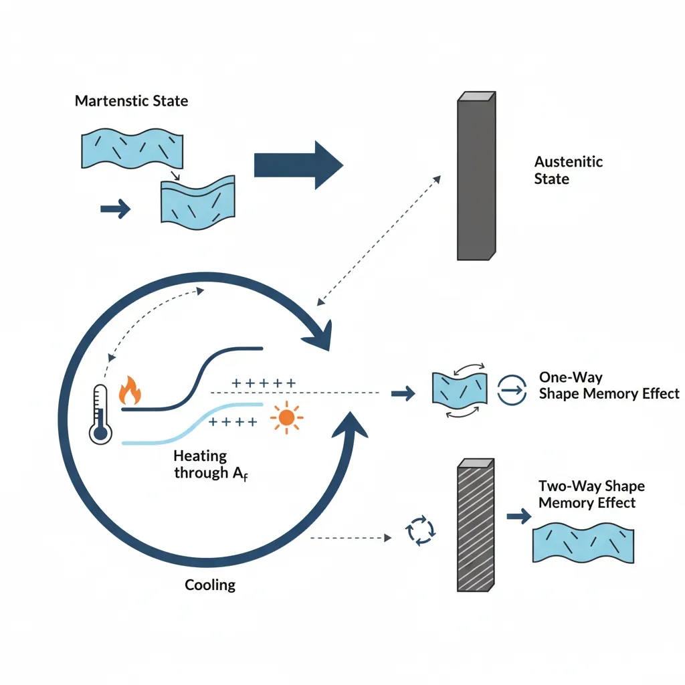
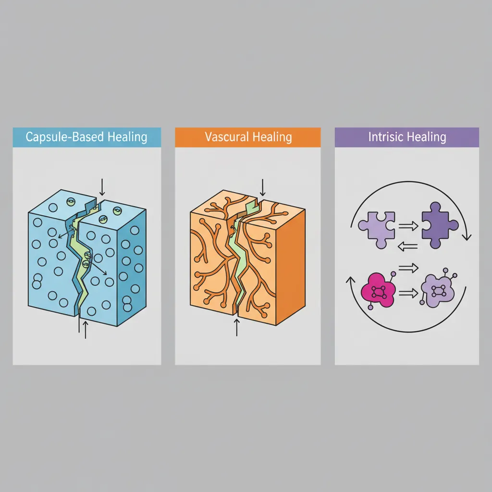

Nanomaterials Fundamentals
Materials Science Mastery
Atomic Structure & Quantum Foundations
Quantum mechanics, bonding, band theory, Fermi energy, phononsCrystal Structures, Defects & Diffusion
FCC/BCC/HCP, Miller indices, dislocations, phase diagrams, Fick's lawsMetals & Alloys
Iron-carbon diagram, steels, aluminum, titanium, superalloys, heat treatmentPolymers & Soft Materials
Polymer chemistry, thermoplastics, viscoelasticity, rheology, biopolymersCeramics, Glass & Composites
Oxide ceramics, toughening, fiber-reinforced composites, interfacial bondingMechanical Behavior & Testing
Stress-strain, hardness, fatigue, fracture toughness, nanoindentationFailure Analysis & Reliability Engineering
Fractography, corrosion, tribology, root cause analysisNanomaterials & Smart Materials
Nanotubes, graphene, piezoelectrics, shape memory alloys, self-healingMaterials Characterization Techniques
XRD, SEM, TEM, AFM, DSC, TGA, spectroscopyThermodynamics & Kinetics of Materials
Gibbs free energy, CALPHAD, phase stability, solidificationElectronic, Magnetic & Optical Materials
Semiconductors, photovoltaics, dielectrics, superconductorsBiomaterials
Implants, biocompatibility, tissue engineering, drug deliveryEnergy Materials
Battery materials, hydrogen storage, fuel cells, nuclear materialsComputational Materials Science
DFT, molecular dynamics, FEM, materials informatics, AIWhat happens when you shrink a material down to the nanoscale — dimensions measured in billionths of a meter? Everything changes. Colors shift, melting points drop, strength soars, and quantum effects emerge that simply don't exist in bulk materials. Nanomaterials (1-100 nm in at least one dimension) bridge the gap between individual atoms and bulk matter, unlocking properties that neither extreme possesses.
Analogy — The Ice Cube Paradox: A single large ice cube melts slowly in your drink. Crush it into thousands of tiny chips, and it melts much faster — even though the total amount of ice is the same. Why? Because the crushed ice has enormously more surface area relative to its volume. Nanomaterials exploit this same principle: a 10 nm gold nanoparticle has about 20% of its atoms on the surface, compared to less than 0.001% for a 1 cm gold bar. Surface atoms behave differently from interior atoms — they have unsatisfied bonds, higher energy, and greater reactivity.

For a sphere of radius $r$, the surface-to-volume ratio is $3/r$. As $r$ shrinks from millimeters to nanometers:
- 1 mm sphere: S/V = 3,000 m⁻¹ — bulk properties dominate
- 1 μm sphere: S/V = 3,000,000 m⁻¹ — surface effects noticeable
- 10 nm sphere: S/V = 300,000,000 m⁻¹ — surface dominates everything
This 100,000× increase in surface area per unit volume is why nanomaterials are extraordinary catalysts, sensors, and energy storage materials.
Carbon Nanotubes (CNTs) are the poster child of nanomaterials. Imagine taking a single sheet of graphene (one atom thick layer of carbon in a hexagonal lattice) and rolling it into a seamless tube just 1-2 nm in diameter. The result is the strongest material ever measured: tensile strength of ~100 GPa (steel is ~0.4 GPa), Young's modulus of ~1 TPa, and electrical conductivity comparable to copper — at one-sixth the density.
- Single-Walled CNTs (SWCNTs): One graphene layer rolled into a tube. Can be metallic or semiconducting depending on the chirality (the angle at which the sheet is rolled). Diameter: 0.4-3 nm.
- Multi-Walled CNTs (MWCNTs): Concentric tubes nested like Russian dolls. Always metallic. Diameter: 2-100 nm. Easier to produce, but harder to disperse in composites.
Graphene — the unrolled nanotube — is the world's first truly 2D material: a single atomic layer of sp²-bonded carbon. It has extraordinary properties: 200× stronger than steel (per unit weight), conducts electricity better than copper, conducts heat better than diamond, is nearly transparent (absorbs only 2.3% of light), is impermeable to all gases (even helium), and is flexible enough to fold like paper.
import numpy as np
import matplotlib.pyplot as plt
# Surface-to-volume ratio vs particle size
diameters_nm = np.logspace(0, 6, 100) # 1 nm to 1 mm
radii_m = (diameters_nm / 2) * 1e-9 # Convert to meters
# S/V ratio for spheres = 3/r (in m^-1), convert to nm^-1 for readability
sv_ratio = 3 / radii_m # m^-1
# Fraction of surface atoms (approximate for FCC metal, atom diameter ~0.3 nm)
atom_d = 0.3e-9 # meters
surface_fraction = 4 * atom_d / (diameters_nm * 1e-9) * 100 # percentage
surface_fraction = np.clip(surface_fraction, 0, 100)
fig, (ax1, ax2) = plt.subplots(1, 2, figsize=(14, 6))
# Plot 1: S/V ratio
ax1.loglog(diameters_nm, sv_ratio, color='#3B9797', linewidth=2.5)
ax1.set_xlabel('Particle Diameter (nm)', fontsize=12)
ax1.set_ylabel('Surface-to-Volume Ratio (m⁻¹)', fontsize=12)
ax1.set_title('Surface/Volume Ratio vs Size', fontsize=14, fontweight='bold')
ax1.axvspan(1, 100, color='#BF092F', alpha=0.1, label='Nanoscale (1-100 nm)')
ax1.legend(fontsize=11)
ax1.grid(True, alpha=0.3, which='both')
# Plot 2: Surface atom fraction
ax2.semilogx(diameters_nm, surface_fraction, color='#132440', linewidth=2.5)
ax2.set_xlabel('Particle Diameter (nm)', fontsize=12)
ax2.set_ylabel('Surface Atoms (%)', fontsize=12)
ax2.set_title('Fraction of Surface Atoms', fontsize=14, fontweight='bold')
ax2.axvspan(1, 100, color='#BF092F', alpha=0.1, label='Nanoscale')
ax2.set_ylim(0, 100)
ax2.legend(fontsize=11)
ax2.grid(True, alpha=0.3)
plt.tight_layout()
plt.savefig('nano_surface_effects.png', dpi=150, bbox_inches='tight')
plt.show()
# Print specific examples
for d in [2, 5, 10, 50, 100, 1000]:
r = (d/2) * 1e-9
sv = 3/r
sf = min(4 * 0.3e-9 / (d * 1e-9) * 100, 100)
print(f" d = {d:>5} nm: S/V = {sv:.2e} m⁻¹, Surface atoms ≈ {sf:.1f}%")
Quantum Dots & Nanoparticles
Quantum dots (QDs) are semiconductor nanocrystals so small (2-10 nm) that quantum mechanics governs their optical and electronic behavior. They are one of the most commercially successful nanomaterials, earning their discoverers the 2023 Nobel Prize in Chemistry.
Analogy — The Guitar String: A guitar string vibrates at specific frequencies determined by its length. Shorten the string, and the pitch goes up. Quantum dots work the same way: shrink the semiconductor crystal, and the electron's wavelength is constrained, raising the energy gap and shifting the emitted light to shorter wavelengths (bluer). A large CdSe quantum dot (~6 nm) glows red, a medium one (~4 nm) glows green, and a small one (~2 nm) glows blue — same material, different size, different color.

- QLED Displays: Samsung and other manufacturers use QDs as color converters in TVs, achieving wider color gamuts than OLED. Each pixel contains QDs tuned to emit precise red, green, and blue wavelengths.
- Biomedical Imaging: QDs conjugated to antibodies light up specific cancer cells for surgical guidance. Their brightness (20× fluorescent dyes) and photostability make them ideal for long-term tracking.
- Solar Cells: QD-sensitized solar cells can absorb multiple photons per quantum dot ("multiple exciton generation"), theoretically exceeding the Shockley-Queisser limit of ~33%.
- Quantum Computing: Individual QDs can serve as qubits, with spin states representing 0 and 1.
Other important nanoparticles include:
- Gold Nanoparticles: Change color with size (red at 20 nm, purple at 80 nm) due to surface plasmon resonance. Used in rapid diagnostic tests (pregnancy tests use gold nanoparticles!), cancer therapy (photothermal ablation), and catalysis.
- Silver Nanoparticles: Powerful antimicrobial agents — release Ag⁺ ions that disrupt bacterial cell membranes. Used in wound dressings, water purification, and antibacterial coatings.
- Iron Oxide Nanoparticles (Fe₃O₄): Superparamagnetic — magnetic in a field, non-magnetic when removed. Used as MRI contrast agents, drug delivery vehicles, and in magnetic hyperthermia cancer treatment.
- TiO₂ Nanoparticles: Photocatalytic — decompose organic pollutants under UV light. Used in self-cleaning glass, air purification, and sunscreen.
Nano-Synthesis Techniques
Making nanomaterials requires either top-down (breaking bulk material into nanopieces) or bottom-up (assembling atoms into nanostructures) approaches:
- Top-Down — Mechanical Milling: Ball mill grinds bulk powder into nanoparticles. Simple but produces broad size distributions and introduces contamination. Used for industrial-scale production of ceramic nanoparticles.
- Top-Down — Lithography: Electron-beam or extreme UV lithography patterns features below 10 nm. Used in semiconductor manufacturing. Expensive but extremely precise.
- Bottom-Up — Chemical Vapor Deposition (CVD): Gas precursors decompose on a heated substrate, growing films atom by atom. Primary method for graphene and CNT synthesis. Controllable but slow.
- Bottom-Up — Sol-Gel: Metal alkoxide precursors hydrolyze and condense into a gel network, then calcined into oxide nanoparticles. Produces very uniform particles. Used for SiO₂, TiO₂, and ZnO nanoparticles.
- Bottom-Up — Colloidal Synthesis: Nucleation and growth in solution with surfactant control. "Hot injection" method produces the most uniform quantum dots. Precise size control by reaction time and temperature.
- Bottom-Up — Self-Assembly: Molecules spontaneously organize into ordered structures driven by thermodynamics. DNA origami, block copolymer lithography, protein cages. Nature's approach to nanofabrication.
Piezoelectric & Ferroelectric Materials
Piezoelectricity is one of nature's most elegant tricks: certain crystals generate electricity when squeezed, and deform when electrified. It's a two-way coupling between mechanical and electrical energy, discovered by Jacques and Pierre Curie in 1880.
Analogy — The Squeezing Sponge: Imagine a sponge soaked with water. When you squeeze it, water flows out (mechanical → fluid energy). When you stop squeezing, it absorbs water back. Piezoelectric materials work similarly, but instead of water, they "squeeze out" electric charge. Apply mechanical stress → electric charge appears on the surfaces. Apply electric voltage → the crystal deforms.

The direct piezoelectric effect relates stress to charge via the piezoelectric coefficient $d$:
$$D = d \cdot \sigma + \varepsilon \cdot E$$
Where $D$ is electric displacement (C/m²), $\sigma$ is applied stress (Pa), $E$ is electric field (V/m), and $\varepsilon$ is permittivity. The coefficient $d_{33}$ (charge per unit force along the polarization axis) is the key figure of merit for sensors and actuators.
| Material | d₃₃ (pC/N) | T_C (°C) | Applications |
|---|---|---|---|
| Quartz (SiO₂) | 2.3 | 573 | Oscillators, frequency standards, watches |
| BaTiO₃ | 190 | 120 | Capacitors, early sensors |
| PZT (Pb(Zr,Ti)O₃) | 300-600 | 200-400 | Actuators, ultrasound, sonar |
| PVDF polymer | -33 | 80 | Flexible sensors, wearables |
| PMN-PT | 1500-2800 | 130-200 | Medical ultrasound, energy harvesting |
| AlN | 5.5 | >1000 | MEMS resonators, 5G filters |
Ferroelectric Domains & Switching
Ferroelectric materials are a subset of piezoelectrics that have a spontaneous polarization that can be switched by an external electric field. The crystal contains domains — regions where all the dipoles are aligned in the same direction. Applying a field above the coercive field flips the domains, creating a characteristic hysteresis loop (P-E curve) that looks similar to the B-H curve in ferromagnets.
Above the Curie temperature ($T_C$), the ferroelectric loses its spontaneous polarization and becomes paraelectric — the crystal structure becomes centrosymmetric and piezoelectricity vanishes. This is why PZT sensors cannot be used above ~350°C, while quartz (with T_C = 573°C) is used for high-temperature applications.
Energy Harvesting & Sensors
Piezoelectric energy harvesting converts ambient mechanical vibrations into electrical energy — powering wireless sensors, IoT devices, and implanted medical devices without batteries. Common energy sources include footsteps, vehicle vibrations, machine vibrations, and ocean waves.
Case Study: Piezoelectric Floor Tiles at Tokyo Station
Tokyo's busy train stations installed piezoelectric floor tiles in high-traffic areas. With 400,000+ daily commuters, each footstep generating ~5 watts instantaneously, the tiles harvest enough energy to power LED displays and ticket gate indicators. Though the total power is modest (~100 W continuous), the system demonstrates the principle and serves as a public awareness tool for clean energy.
Engineering Challenge: The power per footstep is tiny (~1 joule per step), so only applications with extremely low power requirements benefit. The real commercial promise lies in powering wireless sensor nodes in industrial vibration monitoring, where replacing batteries in thousands of sensors is expensive and impractical.
import numpy as np
import matplotlib.pyplot as plt
# Piezoelectric energy harvesting: cantilever beam vibration analysis
# Power output vs frequency for a piezoelectric cantilever energy harvester
freq = np.linspace(1, 200, 1000) # Hz
# Resonant frequency and quality factor
f_res = 60 # Hz (tuned to machinery vibration)
Q = 50 # Quality factor
# Power output follows Lorentzian response near resonance
# P = P_max / (1 + Q^2 * ((f/f_res) - (f_res/f))^2)
P_max = 5.0 # mW at resonance
power = P_max / (1 + Q**2 * ((freq/f_res) - (f_res/freq))**2)
fig, (ax1, ax2) = plt.subplots(1, 2, figsize=(14, 6))
# Plot 1: Power vs frequency
ax1.plot(freq, power, color='#3B9797', linewidth=2.5)
ax1.axvline(x=f_res, color='#BF092F', linestyle='--', alpha=0.7, label=f'Resonance = {f_res} Hz')
ax1.fill_between(freq, power, alpha=0.15, color='#3B9797')
ax1.set_xlabel('Excitation Frequency (Hz)', fontsize=12)
ax1.set_ylabel('Power Output (mW)', fontsize=12)
ax1.set_title('Piezoelectric Harvester Response', fontsize=14, fontweight='bold')
ax1.legend(fontsize=11)
ax1.grid(alpha=0.3)
# Plot 2: Comparison of piezoelectric materials for energy harvesting
materials = ['PZT-5A', 'PMN-PT', 'PVDF', 'AlN', 'BaTiO₃', 'ZnO']
d33 = [374, 2000, 33, 5.5, 190, 12.4] # pC/N
energy_density = [35, 120, 5, 0.5, 18, 1.2] # mJ/cm³ (approximate)
ax2.barh(materials, energy_density, color=['#3B9797', '#132440', '#BF092F', '#16476A', '#3B9797', '#BF092F'], height=0.5)
ax2.set_xlabel('Energy Density (mJ/cm³)', fontsize=12)
ax2.set_title('Harvesting Energy Density by Material', fontsize=14, fontweight='bold')
ax2.grid(axis='x', alpha=0.3)
plt.tight_layout()
plt.savefig('piezo_harvesting.png', dpi=150, bbox_inches='tight')
plt.show()
print(f"At resonance ({f_res} Hz): Power = {P_max:.1f} mW")
print(f"Bandwidth (-3dB): ±{f_res/Q:.1f} Hz around resonance")
print("Key insight: narrow bandwidth means tuning must match vibration source precisely")
Shape Memory & Responsive Materials
Shape memory alloys (SMAs) are metals that "remember" their original shape and can return to it after being deformed — simply by heating them. This seems like magic, but it's actually a reversible solid-state phase transformation between two crystal structures: martensite (low temperature, soft, deformable) and austenite (high temperature, rigid, "remembered" shape).
Analogy — The Memory Foam Mattress: When you press on memory foam, it deforms to your body shape. When you remove the pressure and apply heat (your body heat), it slowly returns to its original flat shape. Shape memory alloys do the same thing, but with metals, at much greater forces, and with precise temperature control.

- One-Way Shape Memory: Deform the material in its cold (martensitic) state → heat above $A_f$ (austenite finish temperature) → it snaps back to its original shape. Must be mechanically deformed again for each cycle. Used in: vascular stents that expand to body temperature, pipe couplings that shrink to grip pipes.
- Two-Way Shape Memory: Material switches between two memorized shapes as temperature cycles above and below transformation temperatures without external force. Requires training (repeated thermomechanical cycling). Used in: thermal actuators, robotic muscles, adaptive structures.
- Superelasticity (Pseudoelasticity): At temperatures above $A_f$, applying stress induces martensite → removes stress → reverts to austenite. Allows up to 8% recoverable strain (vs 0.2% for steel). Used in: eyeglass frames, orthodontic wires, earthquake-resistant structures.
The champion SMA material is Nitinol (NiTi) — approximately 50/50 nickel-titanium. It combines excellent shape memory (up to 8% strain recovery), superelasticity, biocompatibility, and corrosion resistance. Transformation temperatures can be tuned from -100°C to +100°C by adjusting the Ni/Ti ratio by fractions of a percent.
Case Study: Nitinol Vascular Stents
Self-expanding Nitinol stents revolutionized cardiovascular medicine. The stent is compressed into a small catheter at room temperature (in its martensitic state), threaded through blood vessels to the blockage site, then deployed. Upon contact with body-temperature blood (37°C, above its $A_f$), the stent expands to its memorized open-tube shape, pushing the artery open. The superelastic property means the stent can accommodate the pulsatile motion of the artery without plastic deformation — it "breathes" with each heartbeat.
Critical Design Parameters: $A_f$ must be ~30-35°C (below body temperature for complete deployment). Radial force must exceed arterial recoil. Fatigue life must exceed 400 million cycles (10 years of heartbeats). Surface finish must be electropolished to prevent thrombosis.
Magnetostrictive Materials
Magnetostriction is the change in shape of a material when magnetized — the magnetic analog of the piezoelectric effect. Apply a magnetic field → the material changes length. Strain the material → its magnetization changes. This two-way coupling enables sensors and actuators that work through walls, in vacuum, and at high temperatures.
The champion magnetostrictive material is Terfenol-D (Tb₀.₃Dy₀.₇Fe₂), producing strains up to 1600 ppm (0.16%) — an order of magnitude above most piezoelectrics in strain amplitude. Applications include high-power sonar transducers (submarine detection), vibration damping systems, and precision positioning actuators in harsh environments where piezoelectrics would depolarize.
Stimuli-Responsive Polymers
Stimuli-responsive polymers ("smart polymers") change their properties dramatically in response to small environmental changes — temperature, pH, light, electric field, or specific molecules. The most famous example is poly(N-isopropylacrylamide) (PNIPAM), which undergoes a sharp coil-to-globule transition at 32°C (conveniently close to body temperature).
- Thermoresponsive: PNIPAM hydrogels swell ~10× in water below 32°C and collapse above it. Used in: drug delivery (release drug when body temperature rises during fever), smart wound dressings, cell culture surfaces.
- pH-Responsive: Polyacrylic acid swells at high pH and collapses at low pH. Used in: targeted drug delivery to specific gut regions, self-regulating valves, smart coatings.
- Photoresponsive: Polymers containing azobenzene groups change conformation under UV light (trans→cis isomerization). Used in: light-driven actuators, optical data storage, smart surfaces that switch between hydrophilic and hydrophobic.
- Electroactive Polymers (EAPs): Change shape under applied voltage. Dielectric elastomers can achieve >100% strain. Called "artificial muscles" — used in soft robotics, haptic feedback devices, and prosthetics.
Self-Healing & Frontier Materials
Self-healing materials can autonomously repair damage — from scratches in coatings to cracks in structural composites — without human intervention. Inspired by biological repair processes (skin healing, bone remodeling), these materials extend component lifetime and improve safety in structures that are difficult to inspect or repair.
Analogy — The Biological Model: When you cut your finger, blood flows to the wound (delivery of healing agent), clots to stop bleeding (damage containment), and new tissue grows to fill the cut (structural repair). Self-healing materials mimic each of these steps using engineered chemistries.

- Capsule-Based: Microcapsules (~100 μm) filled with liquid healing agent (monomer) and dispersed in the matrix. When a crack ruptures a capsule, the monomer flows into the crack and polymerizes upon contact with a catalyst embedded in the matrix. The White-Sottos-Geubelle system (2001) used dicyclopentadiene (DCPD) capsules with Grubbs catalyst — restoring up to 75% of original fracture toughness.
- Vascular: Networks of hollow channels (like blood vessels) deliver healing agent continuously to damage sites. Can heal the same location multiple times (unlike capsules which are exhausted after one event). Bio-inspired design using 3D-printed sacrificial templates.
- Intrinsic: The material itself has reversible bonding chemistry — no external healing agent needed. Diels-Alder polymers form and break bonds thermally (heat to break, cool to reform). Hydrogen bonding polymers self-heal at room temperature through supramolecular interactions. Unlimited healing cycles but often lower mechanical strength.
Case Study: Self-Healing Concrete
Delft University researchers developed concrete containing dormant bacteria (Bacillus species) and calcium lactate nutrients. When cracks form and water seeps in, the bacteria activate, consume the calcium lactate, and produce calcite (CaCO₃) that fills the crack. The bacteria survive in the alkaline concrete environment by forming spores that remain viable for over 200 years.
Results: Cracks up to 0.8 mm wide healed completely within 3-8 weeks. Permeability reduction >90%. Cost premium ~5-10% over conventional concrete, but lifecycle cost savings of 30-50% due to reduced maintenance. Now commercially available as "Basilisk" self-healing concrete. Ideal for underground structures, water treatment facilities, and marine structures where inspection is difficult.
Nanocomposites & Metamaterials
Nanocomposites combine a matrix material with nanoscale fillers (CNTs, graphene, clay platelets, nanoparticles) to achieve dramatic property improvements at very low filler loadings (typically 0.5-5 wt%):
- Polymer/CNT nanocomposites: Adding just 1 wt% MWCNTs to epoxy increases tensile strength by 25%, elastic modulus by 30%, and electrical conductivity by 10 orders of magnitude (insulator → conductor). Key challenge: achieving uniform dispersion and good interfacial bonding.
- Polymer/clay nanocomposites: Exfoliated montmorillonite clay platelets (1 nm thick, ~100 nm wide) create a "tortuous path" that reduces gas permeability by 50-80%. Used in food packaging (extending shelf life) and fuel tank liners.
- Graphene-reinforced metals: Graphene nanoplatelets in aluminum matrices improve tensile strength by 60% while maintaining ductility. Potential for lightweight automotive and aerospace structures.
Metamaterials are engineered structures with properties not found in nature — achieved through architecture rather than chemistry. Their properties come from the geometry of repeating unit cells, not from the material itself:
- Negative Poisson's ratio (Auxetic): Materials that get thicker when stretched (opposite of all natural materials). Re-entrant honeycomb structures. Used in blast protection, sports equipment, and medical stents.
- Negative refractive index: Electromagnetic metamaterials that bend light "backwards." Enables cloaking devices, superlenses that beat the diffraction limit.
- Mechanical metamaterials: Architected lattices with ultra-low density but high strength. Metallic microlattices with density less than aerogel (99.99% air). Designed by topology optimization and made by 3D printing.
Programmable Matter & 4D Printing
4D printing = 3D printing + time. Objects printed from stimuli-responsive materials that change shape after printing, triggered by temperature, moisture, light, or pH. The "fourth dimension" is the programmed shape change over time.
- Self-Assembling Structures: Flat-printed structures that fold into 3D shapes when heated — enabling compact shipping and deployment (think flat-pack furniture that assembles itself).
- Adaptive Pipes: MIT's Self-Assembly Lab developed pipes that change diameter in response to water flow rate, automatically adapting to demand without pumps or valves.
- Biomedical Scaffolds: Shape-changing implants printed in compressed form, inserted through small incisions, then expanding to fill bone defects at body temperature.
- Programmable Textiles: Fabrics that open pores when temperature rises (ventilation) and close when cold — autonomous thermal regulation without electronics.
import numpy as np
import matplotlib.pyplot as plt
# Shape Memory Alloy: Phase transformation and stress-strain behavior
# Temperature-dependent transformation for NiTi
temp = np.linspace(-50, 150, 500)
# Martensite fraction using simplified model
# M_s = 60°C, M_f = 20°C, A_s = 70°C, A_f = 95°C
Ms, Mf = 60, 20 # Martensite start/finish (cooling)
As, Af = 70, 95 # Austenite start/finish (heating)
# Cooling: martensite fraction increases
xi_cool = np.piecewise(temp,
[temp >= Ms, (temp < Ms) & (temp > Mf), temp <= Mf],
[0, lambda t: 0.5*(1 - np.cos(np.pi*(Ms - t)/(Ms - Mf))), 1])
# Heating: martensite fraction decreases
xi_heat = np.piecewise(temp,
[temp <= As, (temp > As) & (temp < Af), temp >= Af],
[1, lambda t: 0.5*(1 + np.cos(np.pi*(t - As)/(Af - As))), 0])
fig, (ax1, ax2) = plt.subplots(1, 2, figsize=(14, 6))
# Plot 1: Transformation hysteresis
ax1.plot(temp, xi_cool * 100, '#BF092F', linewidth=2.5, label='Cooling (→ Martensite)')
ax1.plot(temp, xi_heat * 100, '#3B9797', linewidth=2.5, label='Heating (→ Austenite)')
ax1.axvline(x=Ms, color='gray', linestyle=':', alpha=0.5)
ax1.axvline(x=Mf, color='gray', linestyle=':', alpha=0.5)
ax1.axvline(x=As, color='gray', linestyle=':', alpha=0.5)
ax1.axvline(x=Af, color='gray', linestyle=':', alpha=0.5)
ax1.text(Ms+2, 5, f'Mₛ={Ms}°C', fontsize=9, color='gray')
ax1.text(Mf-15, 95, f'Mf={Mf}°C', fontsize=9, color='gray')
ax1.text(As+2, 95, f'Aₛ={As}°C', fontsize=9, color='gray')
ax1.text(Af+2, 5, f'Af={Af}°C', fontsize=9, color='gray')
ax1.set_xlabel('Temperature (°C)', fontsize=12)
ax1.set_ylabel('Martensite Fraction (%)', fontsize=12)
ax1.set_title('NiTi Phase Transformation Hysteresis', fontsize=14, fontweight='bold')
ax1.legend(fontsize=11)
ax1.grid(alpha=0.3)
# Plot 2: Superelastic stress-strain curve
strain_load = np.linspace(0, 8, 200)
# Superelastic plateau behavior
stress_load = np.piecewise(strain_load,
[strain_load < 1, (strain_load >= 1) & (strain_load < 6), strain_load >= 6],
[lambda s: s * 500, lambda s: 500 + (s-1)*10, lambda s: 550 + (s-6)*600])
strain_unload = np.linspace(8, 0, 200)
stress_unload = np.piecewise(strain_unload,
[strain_unload > 6, (strain_unload <= 6) & (strain_unload > 0.5), strain_unload <= 0.5],
[lambda s: 550 + (s-6)*600, lambda s: 200 + (s-0.5)*5, lambda s: s*400])
ax2.plot(strain_load, stress_load, '#3B9797', linewidth=2.5, label='Loading')
ax2.plot(strain_unload, stress_unload, '#BF092F', linewidth=2.5, label='Unloading')
ax2.annotate('Stress-induced\nmartensite', xy=(3.5, 520), fontsize=10,
color='#132440', ha='center', fontweight='bold')
ax2.annotate('Reverse\ntransformation', xy=(3.5, 215), fontsize=10,
color='#132440', ha='center', fontweight='bold')
ax2.set_xlabel('Strain (%)', fontsize=12)
ax2.set_ylabel('Stress (MPa)', fontsize=12)
ax2.set_title('NiTi Superelastic Behavior', fontsize=14, fontweight='bold')
ax2.legend(fontsize=11)
ax2.grid(alpha=0.3)
plt.tight_layout()
plt.savefig('sma_behavior.png', dpi=150, bbox_inches='tight')
plt.show()
print("Shape Memory: Deform cold → Heat → Recovers original shape")
print("Superelasticity: Deform above Af → Unload → Recovers (up to 8% strain)")
print(f"Transformation hysteresis width: {As - Mf}°C (heating) to {Ms - Mf}°C (cooling)")
Exercises & Practice Problems
- Nanoscale Effects: Calculate the surface-to-volume ratio for gold nanoparticles of diameter 5 nm, 50 nm, and 500 nm. At which size does more than 10% of atoms reside on the surface? (Use atom diameter ≈ 0.288 nm for gold.)
- Quantum Dots: A CdSe quantum dot emits at 620 nm (red). If the band gap increases as $1/r^2$, estimate the emission wavelength for a QD with half the radius. What color would it appear?
- Piezoelectric Design: A PZT-5A actuator (d₃₃ = 374 pC/N) is 2 mm thick. Calculate the displacement when 200 V is applied across it. How many layers would you need in a multilayer stack to achieve 10 μm displacement?
- Shape Memory Alloy: A NiTi wire has $A_f$ = 90°C and is deformed 5% at room temperature. (a) What triggers shape recovery? (b) What is the maximum recoverable strain? (c) Would this wire be suitable for a vascular stent? Why or why not?
- Self-Healing: Compare capsule-based and intrinsic self-healing approaches for an automotive clear-coat application. Which would you recommend and why? Consider healing efficiency, number of healing cycles, cost, and aesthetics.
- Metamaterial Design: An auxetic structure has a Poisson's ratio of -0.5. If a tensile strain of 2% is applied along the x-axis, what strain occurs in the y-direction? How could this property be useful in a blast-protection panel?
Conclusion & Next Steps
Nanomaterials and smart materials are transforming engineering by enabling properties that were previously impossible — materials that heal themselves, remember their shape, convert vibrations to electricity, and change color with size. In this guide, we've explored:
- Nanomaterials exploit the dramatic increase in surface-to-volume ratio at the nanoscale, enabling carbon nanotubes (100× stronger than steel), graphene (conductivity of copper at 1/6 density), quantum dots (tunable light emission), and multifunctional nanoparticles.
- Piezoelectric and ferroelectric materials couple mechanical and electrical energy, powering sensors, actuators, ultrasound transducers, and energy harvesters that run on ambient vibrations.
- Shape memory alloys remember and recover their original form, enabling self-expanding medical stents, earthquake-resistant structures, and robotic actuators with muscle-like behavior.
- Self-healing materials autonomously repair damage through capsules, vascular networks, or reversible chemistry — extending lifetimes and improving safety for structures that cannot be easily inspected.
- Metamaterials and 4D printing achieve properties not found in nature through engineered architectures, opening frontiers in cloaking, auxetic structures, and programmable matter.
These technologies are converging: self-healing nanocomposites reinforced with CNTs, piezoelectric metamaterials for energy harvesting, and 4D-printed shape memory scaffolds for tissue engineering. The future of materials science lies at these intersections.